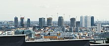

Economy of Slovakia
|  Panorama of Bratislava business district | |
| Currency | Euro (EUR, €) |
|---|---|
| Calendar year | |
Trade organisations | EU, WTO, OECD |
Country group | |
| Statistics | |
| Population | 5,428,797 (2023)[3] |
| GDP | |
| GDP rank | |
GDP growth |
|
GDP per capita | |
GDP per capita rank | |
GDP by sector |
|
| |
Population below poverty line | |
| 21.6 low (2023)[8] | |
| 54 out of 100 points (2023)[10] (47th) | |
Labour force | |
Labour force by occupation |
|
| Unemployment | |
Average gross salary | €1,418 per month |
| €1,067 per month | |
Main industries | automobiles; metal and metal products; electricity, gas, coke, oil, nuclear fuel; chemicals, synthetic fibers, wood and paper products; machinery; earthenware and ceramics; textiles; electrical and optical apparatus; rubber products; food and beverages; pharmaceutical |
| External | |
| Exports | $107.43 billion (2021 est.)[5] |
Export goods | vehicles and related parts 27%, machinery and electrical equipment 20%, nuclear reactors and furnaces 12%, iron and steel 4%, mineral oils and fuels 5% (2015) |
Main export partners |
|
| Imports | $107.358 billion (2021 est.)[5] |
Import goods | machinery and electrical equipment 20%, vehicles and related parts 14%, nuclear reactors and furnaces 12%, fuel and mineral oils 9% (2015) |
Main import partners | |
FDI stock | |
| -$2.875 billion (2021 est)[5] | |
Gross external debt | $75.04 billion (2016)[5] |
| Public finances | |
| Revenues | 41.5% of GDP (2019)[15] |
| Expenses | 42.8% of GDP (2019)[15] |
| Economic aid |
|
| $9.61 billion (31 December 2021 est.)[5] | |
All values, unless otherwise stated, are in US dollars. | |
{kind=link}
The economy of Slovakia is based upon Slovakia becoming an EU member state in 2004, and adopting the euro at the beginning of 2009. Its capital, Bratislava, is the largest financial centre in Slovakia. As of Q1 2018, the unemployment rate was 5.72%.[22]
Whereas between 1970 and 1985 real incomes increased by about 50%, they fell in the 1990s. The gross domestic product only returned to its 1989 level in 2007.[23]
Due to the Slovak GDP growing very strongly from 2000 until 2008 – e.g. 10.4% GDP growth in 2007 – the Slovak economy was referred to as the Tatra Tiger.
History
[edit]Since the establishment of the Slovak Republic in January 1993, Slovakia has undergone a transition from a centrally planned economy to a free market economy, a process which some observers were to believe was slowed in the 1994–98 period due to the crony capitalism and other fiscal policies of Prime Minister Vladimír Mečiar's government. While economic growth and other fundamentals improved steadily during Mečiar's term, public and private debt and trade deficits also rose, and privatization was uneven. Real annual GDP growth peaked at 6.5% in 1995 but declined to 1.3% in 1999.
Two governments of the "liberal-conservative" Prime Minister Mikuláš Dzurinda (1998–2006) pursued policies of macroeconomic stabilization and market-oriented structural reforms. Nearly the entire economy has now been privatized, and foreign investment has picked up. Economic growth exceeded expectations in the early 2000s, despite recession in key export markets. In 2001 policies of macroeconomic stabilization and structural reform led to spiraling unemployment. Unemployment peaked at 19.2% (Eurostat regional indicators) in 2001,[24] and though it has fallen to (depending on the methodology) 9.8%([citation needed] or 13.5%[citation needed] as of September 2006, it remains a problem. Solid domestic demand boosted economic growth to 4.1% in 2002. Strong export growth, in turn, pushed economic growth to a still-strong 4.2% in 2003 and 5.4% in 2004, despite a downturn in household consumption. Multiple reasons entailed a GDP growth of 6% in 2005. Headline consumer price inflation dropped from 26% in 1993 to an average rate of 7.5% in 2004, though this was boosted by hikes in subsidized utilities prices ahead of Slovakia's accession to the European Union. In July 2005, the inflation rate dropped to 2.0% and is projected at less than 3% in 2005 and 2.5% in 2006. In 2006, Slovakia reached the highest economic growth (8.9%) among the members of OECD and the third highest in the EU (just behind Estonia and Latvia). The country has had difficulties addressing regional imbalances in wealth and employment.[25] GDP per capita ranges from 188% of EU average in Bratislava to only 54% in Eastern Slovakia.
About 10% of the Slovak labour force is expatriate in 2014. The country has one of the highest levels of long-term unemployment in Europe, with 7.1% of the labour force unemployed for more than a year in 2017.[23]
99.9% of Slovak firms are small and medium-sized enterprises and they account for 73.3% of all jobs in the country. [26][27]
Foreign investments
[edit]Foreign direct investment (FDI) in Slovakia has increased dramatically. Cheap and skilled labor, a 19% flat tax rate for both businesses and individuals, no dividend taxes, a weak labor code, and a favorable geographical location are Slovakia's main advantages for foreign investors. FDI inflow grew more than 600% from 2000 and cumulatively reached an all-time high of, US$17.3 billion in 2006, or around $18,000 per capita by the end of 2006. The total inflow of FDI in 2006 was $2.54 billion. In October 2005 new investment stimuli introduced – more favorable conditions to IT and research centers, especially to be located in the east part of the country (where there is more unemployment), to bring more added value and not to be logistically demanding.
Origin of foreign investment 1996–2005 – the Netherlands 24.3%; Germany 19.4%, Austria 14.1%; Italy 7.5%, United States (8th largest investor) 4.0%. Top investors by companies: Deutsche Telekom (Germany), Neusiedler (Austria), Gaz de France (France), Gazprom (Russia), U.S.Steel (U.S.), MOL (Hungary), ENEL (Italy), E.ON (Germany).
Foreign investment sectors – industry 38.4%; banking and insurance 22.2%; wholesale and retail trade 13.1%; production of electricity, gas and water 10.5%; transport and telecommunications 9.2%.
| 2003 | 2004 | 2005 | |
|---|---|---|---|
| Inflows | 756 | 1,261 | 1,908 |
| Outflows | 22 | 144 | 146 |
Former minister (1998-2002) Brigita Schmögnerová explains that: "There is still a consensus among leaders on social dumping. Since the enlargement of the European Union, foreign companies have been looking for the cheapest labour, but instead of joining forces, governments in the region compete to offer the lowest possible level of taxes. When Slovakia joined the European Union in 2004, it became the first OECD country to introduce a full flat tax rate of 19% on both corporate profits and income or consumer goods. The lack of tax progressivity leads to a sharp increase in inequality. Spending on health, education or housing is below the EU average.[23]
Services
[edit]Slovak service sector grew rapidly during the last 10 years and now employs about 69% of the population and contributes with over 61% to GDP. Slovakia's tourism has been rising in recent years, income has doubled from US$640 million in 2001 to US$1.2 billion in 2005.[28]
Industry
[edit]Slovakia became industrialized mostly in the second half of the 20th century. Heavy industry (including coal mining and the production of machinery and steel) was built for strategic reasons because Slovakia was less exposed to the military threat than the western parts of Czechoslovakia. After the end of the Cold War, the importance of industry, and especially of heavy industry, declined. In 2010, industry (including construction) accounted for 35.6% of GDP, compared with 49% in 1990. Nowadays, building on a long-standing tradition and a highly skilled labor force, main industries with potential of growth are following sectors: Automotive, Electronics, Mechanical engineering, Chemical engineering, Information technology.
The automotive sector is among the fastest growing sectors in Slovakia due to the recent large investments of Volkswagen (Bratislava), Peugeot (Trnava), Kia Motors (Žilina) and since 2018 also Jaguar Land Rover in Nitra. Passenger car production was 1,040,000 units in 2016, what makes Slovakia the largest automobile producer in produced cars per capita.[29] Other big industrial companies include U.S. Steel (metallurgy), Slovnaft (oil industry), Samsung Electronics (electronics), Foxconn (electronics), Mondi SCP (paper), Slovalco (aluminum production), Hyundai Mobis (automotive), Continental Matador (automotive) and Whirlpool Corporation. In 2006, machinery accounted for more than a half of Slovakia's export.
Largest companies by revenue
[edit]| Company | Revenue (EUR millions)[30] |
|---|---|
| Volkswagen Slovakia | 9,735 |
| Kia Motors Slovakia | 6,759 |
| Slovnaft | 6,018 |
| Slovenské elektrárne | 4,968 |
| U. S. Steel Košice | 4,023 |
| Slovenský plynárenský priemysel | 3,955 |
| PCA Slovakia | 3,659 |
| Všeobecná zdravotná poisťovňa | 3,478 |
| ZSE Energia | 2,330 |
| DÔVERA zdravotná poisťovňa | 1,902 |
Largest companies by profit
[edit]| Company | Profit (EUR millions)[31] |
|---|---|
| SPP Infrastructure | 462 |
| Slovnaft Eustream | 415 |
| U. S. Steel Košice | 333 |
| B.M.G. INVEST | 298 |
| Eustream | 265 |
| Slovenská sporiteľňa | 245 |
| Slovalco | 207 |
| Volkswagen Slovakia | 202 |
| NAFTA (company) | 200 |
| Tatra banka | 200 |
| Závody ťažkého strojárstva Dubnica nad Váhom,akciová spoločnosť v konkurze | 184 |
| Kia Motors Slovakia | 176 |
| J&T FINANCE GROUP | 164 |
| HORIZONT SLOVAKIA | 162 |
| Lidl Slovenská republika | 153 |
GDP growth
[edit]The development of Slovakia's GDP according to the World Bank:[32]
| Year | 2001 | 2002 | 2003 | 2004 | 2005 | 2006 | 2007 | 2008 | 2009 | 2010 | 2011 | 2012 | 2013 | 2014 | 2015 | 2016 | 2017 | 2018 | 2019 | 2020 | 2021 | 2022 |
|---|---|---|---|---|---|---|---|---|---|---|---|---|---|---|---|---|---|---|---|---|---|---|
| % GDP | 3.3 | 4.5 | 5.5 | 5.3 | 6.6 | 8.5 | 10.8 | 5.6 | −5.5 | 6.7 | 2.7 | 1.3 | 0.6 | 2.7 | 5.2 | 1.9 | 2.9 | 4.0 | 2.5 | −3.3 | 4.8 | 1.8 |
In 2007, Slovakia obtained the highest GDP growth among the members of OECD and the EU, with the record level of 14.3% in the fourth quarter.[33] In 2014, GDP growth was 2.4% and in 2015 and 2016 Slovakia's economy grew 3.6% and 3.3% respectively.
Agriculture
[edit]In 2016, agriculture accounted for 3.6% of GDP (compared to 6.9% in 1993) and occupied about 3.9% of the labor force (down from 10.2% in 1994). Over 40% of the land in Slovakia is cultivated. The southern part of Slovakia (bordering with Hungary) is known for its rich farmland. Growing wheat, rye, corn, potatoes, sugar beets, grains, fruits and sunflowers. Vineyards are concentrated in Little Carpathians, Tokaj, and other southern regions. The breeding of livestock, including pigs, cattle, sheep, and poultry is also important.
Slovakia produced in 2018:
- 1.9 million tons of wheat;
- 1.5 million tons of maize;
- 1.3 million tons of sugar beet (the beet is used to manufacture sugar and ethanol);
- 486 thousand tons of barley;
- 480 thousand tons of rapeseed;
- 201 thousand tons of sunflower seed;
- 169 thousand tons of potato;
- 104 thousand tons of soybean;
In addition to smaller productions of other agricultural products, like grape (52 thousand tons).[34]
Information technology
[edit]In recent years, service and high-tech-oriented businesses have prospered in Slovakia. Many global companies, including IBM, Dell, Lenovo, AT&T, SAP, Amazon, Johnson Controls, Swiss Re and Accenture, have built outsourcing and service centres in Bratislava[35] and Košice (T-Systems, Cisco Systems, Ness, Deloitte[36]). Slovak IT companies, including ESET, Sygic and Pixel Federation have headquarters in Bratislava.
Innovation
[edit]According to a recent report by the European Commission, Slovakia (along with some other Central and Eastern European economies) is low on the list of EU states in terms of innovation (Slovakia ranks 22nd). Within the EU, it ranks next to last on knowledge creation and last for innovation and entrepreneurship. In the process of transition to a knowledge economy, it particularly lacks investment into education and a broader application of IT. The World Bank urges Slovakia to upgrade information infrastructure and reform the education system. The OECD states that a stronger product market competition would help.
In March 2006, the Slovak government introduced new measures to implement the Action Plan for R&D and Innovation. The program covers the period from 2006 to 2010. The RDA is expected to launch at least one call for the expression of interests related to this program each year. The annual budget for the program will be set by the RDA. The overall amount available for the program depends on annual national budget resources and is likely to vary from year to year. Following an increase of around 50% in budget resources, the RDA disposes of a total budget of €19.31 million in 2006.
Labour
[edit]The minimum wage in Slovakia in 2023 is set at €700 per month,[37] the average salary for 2021 was € 1211 per month,[38] in the Bratislava region in 2021 the average salary was €1520 per month.[39] As of June 2023 the unemployment rate stood at 6.2%.[40]
Statistics
[edit]Currency switch to the euro
Slovakia switched its currency from the Slovak crown (SK – slovenská koruna) to the Euro on 1 January 2009, at a rate of 30.1260 korunas to the euro.
Foreign trade[41]
| Year | 2008 | 2009 | 2010 | 2011 | 2012 | 2013 | 2014 | 2015 | 2016 | 2017 | 2018 | 2019 | 2020 |
|---|---|---|---|---|---|---|---|---|---|---|---|---|---|
| Exports € bn | 49.5 | 39.7 | 35.0 | 56.8 | 62.8 | 64.4 | 64.8 | 73.12 | 74.35 | 83.9 | 93.1 | 91.2 | 86.4 |
| Imports € bn | 50.3 | 38.8 | 34.6 | 55.8 | 59.2 | 60.1 | 60.2 | 71.09 | 71.47 | 75.2 | 83.9 | 83.5 | 77.8 |
Companies
[edit]In 2022, the sector with the highest number of companies registered in Slovakia is Services with 227,424 companies followed by Retail Trade and Finance, Insurance, and Real Estate with 39,324 and 37,784 companies respectively.[42]
See also
[edit]References
[edit]- ^ "World Economic Outlook Database, April 2024". IMF.org. International Monetary Fund. Retrieved 29 April 2024.
- ^ "World Bank Country and Lending Groups". datahelpdesk.worldbank.org. World Bank. Retrieved 29 September 2019.
- ^ "Population on 1 January". data.europa.eu. Retrieved 12 December 2023.
- ^ a b c d e f "World Economic Outlook Database, April 2024". IMF.org. International Monetary Fund.
- ^ a b c d e f g h i j k "CIA World Factbook". CIA.gov. Central Intelligence Agency. Retrieved 7 January 2019.
- ^ "Poverty headcount ratio at national poverty lines (% of population) – Slovak Republic". data.worldbank.org. World Bank. Retrieved 19 October 2019.
- ^ "People at risk of poverty or social exclusion". ec.europa.eu/eurostat. Eurostat.
- ^ "Gini coefficient of equivalised disposable income – EU-SILC survey". ec.europa.eu/eurostat. Eurostat.
- ^ a b "Human Development Report 2023/2024" (PDF). United Nations Development Programme. 13 March 2024. Archived (PDF) from the original on 13 March 2024. Retrieved 28 April 2024.
- ^ "Corruption Perceptions Index". Transparency International. 30 January 2024. Archived from the original on 30 January 2024. Retrieved 15 July 2024.
- ^ "Labor force, total – Slovak Republic". data.worldbank.org. World Bank. Retrieved 1 November 2019.
- ^ "Employment rate by sex, age group 20-64". ec.europa.eu/eurostat. Eurostat. Retrieved 20 July 2024.
- ^ "Unemployment by sex and age – monthly average". appsso.eurostat.ec.europa.eu. Eurostat. Retrieved 4 October 2020.
- ^ "Unemployment rate by age group". data.oecd.org. OECD. Retrieved 8 September 2020.
- ^ a b c d e f "Euro area and EU27 government deficit both at 0.6% of GDP" (PDF). ec.europa.eu/eurostat. Eurostat. Retrieved 28 April 2020.
- ^ "Archived copy" (PDF). Archived (PDF) from the original on 25 December 2017. Retrieved 25 December 2017.
{{cite web}}: CS1 maint: archived copy as title (link) - ^ "Archived copy" (PDF). Archived (PDF) from the original on 20 April 2017. Retrieved 25 December 2017.
{{cite web}}: CS1 maint: archived copy as title (link) - ^ "Sovereigns rating list". Standard & Poor's. Retrieved 26 May 2011.
- ^ a b Rogers, Simon; Sedghi, Ami (15 April 2011). "How Fitch, Moody's and S&P rate each country's credit rating". The Guardian. Retrieved 28 May 2011.
- ^ "Fitch Downgrades Slovakia to 'A-'; Outlook Stable". www.fitchratings.com.
- ^ "Scope downgrades Slovakia to A and revises the Outlook to Stable". Scope Ratings. Retrieved 10 February 2024.
- ^ "Statistical Office of the Slovak Republic". Archived from the original on 24 September 2018. Retrieved 12 March 2018.
- ^ a b c "Hinter Bratislava". 9 November 2017.
- ^ "News of the Month" (PDF). International Center for Economic Growth. February 2006. p. 14. Archived from the original (PDF) on 4 July 2007.
- ^ Votruba, Martin. "Regional Wealth". Slovak Studies Program. University of Pittsburgh. Archived from the original on 2 June 2010. Retrieved 10 April 2010.
- ^ "Slovak high tech metallurgy business booms with EU financing". European Investment Bank. Retrieved 25 September 2023.
- ^ Adamcová, Eva (26 May 2021). "Small and medium-sized enterprises in the regions of the Slovak Republic". Monitoring MSP. Retrieved 25 September 2023.
- ^ "Slovakia Architecture and Urban Development Tenders". Global Tenders. Retrieved 10 May 2024.
- ^ "Slovensko kraľuje výrobe áut vo svete, dosiahli sme nový rekord" (in Slovak). HNonline. 17 January 2017. Retrieved 25 June 2017.
- ^ "Najväčšie firmy na Slovensku: zoradené podľa tržieb". finstat.sk.
- ^ "Firmy na Slovensku zoradené podľa zisku". finstat.sk.
- ^ "GDP growth (annual %)". data.worldbank.org. World Bank. Retrieved 8 April 2019.
- ^ "Gross domestic product in the 4th quarter of 2007". Statistical Office of the Slovak Republic. 4 March 2008. Archived from the original on 10 October 2008. Retrieved 14 February 2008.
- ^ "Slovakia production in 2018, by FAO".
- ^ "Lenovo invests in Slovakia with new jobs". Slovak Investment and Trade Development Agency. 20 April 2006. Retrieved 25 April 2007.
- ^ "Členovia – Košice IT Valley". kosiceitvalley.sk.
- ^ "Minimálna mzda 2018". Minimalnamzda.sk. Retrieved 1 March 2018.
- ^ "Priemerná mzda". Štatistický úrad SR. Retrieved 1 March 2023.
- ^ "Koľko zarábali Slováci v roku 2021? - Platy.sk". Paylab - Salary survey, Compare salary, Salary data (in Slovak). Retrieved 12 January 2023.
- ^ "Miera nezamestnanosti klesla na 6,2 %". Denník E (in Slovak). 5 June 2023. Retrieved 12 June 2023.
- ^ "CEE Basic Data – Key economic indicators and forecasts". Ceemarket.com. Retrieved 3 March 2015.
- ^ "Industry Breakdown of Companies in Slovakia". HitHorizons.